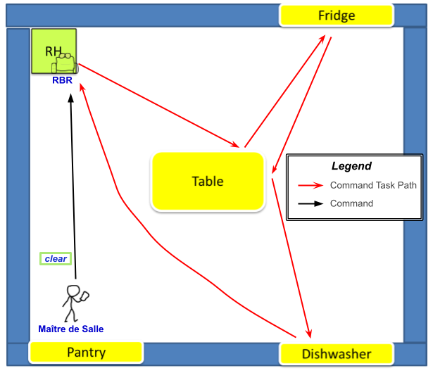

Introduction
Keeping in mind the motto:Requirements
Below it's shown the requirements text provided by the customer.
Requirement analysis
Glossary
By the interaction with the customer, here it's exposed an essential glossary about the meaning of the names and of the verbs included in the requirements text given by the customer.| It's an environment equipped with a set of smart and non-smart resources and in which the interactions between these elements happen. These resources are: a |
|
| Person who manages the |
|
| Smartphone application or a user-GUI in a browser used by |
|
| It's a smart device, having knowledge base on his storage, and an "Internet Thing". It's embedded into the wall of the |
|
| It's a non-smart resource embedded into the wall of the |
|
| It's a non-smart resource embedded into the wall of the |
|
| It's a non-smart resource put in the center of the |
|
| It's a |
|
| The customer provided all the documentation about this topic: the documentation about the basicRobot (at basicrobot2021.html), that can be implemented as a virtual robot (at VirtualRobot2021.html) or as a real robot, that can be an mbot (at MBot2020.html) or a nano robot (at LabNanoRobot.html). | |
| It's the position in the |
|
| It's a task that the |
|
| This |
|
| This |
|
| Univoque code associated to a specific food. | |
| This |
Requirements analysis
Once we have understood the main concepts set by the requirements text given by the customer, it's now possible to analyze them.The software system is a distribuited system composed by three main entities:
|
 |
The software running on
|
 |
The software running on
|
|
The software running on
|
A first set of functional Test Plans
Scenario
Here, it's illustrated a possible scenario of the system.| Steps in the scenario | Simplified representation of each step |
|---|---|
|
 |
|
 |
|
 |
|
 |
At every time of the service:
|
|
Test Plans
It's necessary to make some test plans that must be verified for the correct working of the final system, according to the requirements provided by the customer.Below it's reported a first planning of tests:
- Tests of the position of the
RBR that must be on itsRH when system starts and at the end of eachtask ; - Tests of the states for each element (
FRIDGE ,PANTRY ,DISHWASHER ,TABLE ) in theroom at the start and at the end of the service and at the end of eachtask /AT EVERY TIME DURING THE SERVICE; - Tests of all the communications between entities;
- Tests of the path carried out by the
RBR that must be the one expected to execute thetask required by theMaître de Salle ; - TESTS OF THE MUTUAL EXCLUSION OF
TASKS AND OF THEIR ORDER OF EXECUTION; - Tests of the state of the
RBR to verify that it is stopped after receiving stop command and to verify that it resumestask execution after receiving the reactivate command; - TESTS OF THE STOP AND REACTIVATE COMMANDS THAT CAN BE USED BY
MAÎTRE DE SALLE ONLY WHEN THERE IS A RUNNINGTASK ; - Test of the capability of the
RBR to avoid all the possible obstacles.
Problem analysis
TO DO
A first model of the system architecture
From this analysis/the requirements analysis, it's possible to realize a first model of the system architecture that is an initial representation of this system.Interactions between entities written in natural language:
ComunicationmaitreNode -robotNode robotCmd : robotCmd(X) X=[prepare, addFood(foodCode), clear, stop, reactivate] { commandtask (prepare, addFood(foodCode), clear)task (Prepare the room ,Add food ,Clear the room ) command handle (stop, reactivate) } (DOBBIAMO DIRE PERCHE ABBIAMO DECISO CHE È IL SOFTWARE SUL MAITRENODE AD ESSERE A CONOSCENZA DELLO STATO DEGLI ELEMENTI NON SMART!!! AD ESEMPIO, PERCHÈ, QUALORA IN FUTURO DIVENTASSERO ANCHE QUESTI ELEMENTI RISORSE SMART, ALLORA IN QUESTO MODO SAREBBE PIU FACILE DA IMPLEMENTARE???) ComunicationmaitreNode -fridgeNode /Maitre consult OR consultCmd OR consultCmd : consultCmd(ROOM) { command consult (maitreNode knowns the state of non-smart elements, and asks to the smart devices to know their state) } ComunicationrobotNode -maitreNode fail : fail(m) { report of failure (SAREBBE IL WARNING INDICATO NEI REQUISITI.. SCRIVIAMO WARNING MEGLIO???) after receiving answer(no) fromfridgeNode (if there isn't food=food-code in thefridge ) } ComunicationrobotNode -fridgeNode ask : ask(foodCode ) { command ask(food-code ) after receiving command addfood(food-code) frommaitreNode } ComunicationfridgeNode -maitreNode expose : expose(state) { command expose after receiving command consult frommaitreNode } ComunicationfridgeNode -robotNode answer : answer(Y) Y=[yes,no] { command answer after receiving command ask(food-code ) fromrobotNode }
A first model of the system architecture
From this analysis/the requirements analysis, it is possible to realize a first model of the system architecture that is an initial representation of this system.| Interactions between entities written in natural language | First representation/model of the system |
|---|---|
| Comportamento robot (COME LO DICIAMO??? O RAPPRESENTIAMO ???): - torna a posizione iniziale alla fine di ogni task - é in grado di eseguire i task senza collisioni/evitando gli ostacoli - si ferma e riparte se riceve i comandi stop e reactivate da parte del maître |  |
Comunication Maitre - RBR robotCmd : robotCmd(X) X=[addFood(foodCode), clear, prepare, stop, reactivate] {
command Task (prepare addfood(food-code) clear)
command handle (stop/reactivate)
task ("Prepare the room" "Add food" "Clear the room")
}
Comunication Maitre - Fridge/Maitre : **consultCmd** {
command consult (ROOM)
((DOBBIAMO DIRE PERCHE ABBIAMO DECISO CHE È IL SOFTWARE SUL MAITRENODE
CHE È A CONOSCENZA DELLO STATO DEGLI ELEMENTI NON SMART!!!
AD ESEMPIO PERCHÈ, QUALORA IN FUTURO DIVENTASSERO ANCHE QUESTI ELEMENTI RISORSE SMART,
ALLORA IN QUESTO MODO SAREBBE PIU FACILE DA IMPLEMENTARE???)
Maitre knowns the state of non-smart elements, and asks to the smart devices to know their state)
}
|
|
Comunication RBR - Maitre fail:fail(m) {
report of failure
(SAREBBE IL WARNING INDICATO NEI REQUISITI.. VA DETTO???)
after receiving answer(no) from Fridge (if there isn't food=food-code in the fridge)
}
Comunication RBR - Fridge ask:ask(foodCode) {
command ask(food-code) after receiving command addfood(food-code) from Maitre
}
|
|
Comunication Fridge - Maitre expose : expose(state) {
command expose after receiving command consult from Maitre
}
Comunication Fridge - RBR answer:answer(Y) Y(Y=[yes,no]) {
command answer after receiving command ask(food-code) from RBR
}
|
Problem analysis
(DAL NUOVO TAMPLATE:)Problem analysis
MAIN GOALS:
- identify the main problems involved by the requirements and the most appropriate (software) technologies to adopt
- evaluate the abstraction gap and give a quantitative measure of the effort/resources necessary to build the system
- define (a model of) the logical architecture of the system
- refine the set of functional TestPlan
- (with reference to SCRUM) define a (first) product backlog and a possibile set/sequence of SPRINT
WARNING: expressions like 'we have chosen to ...', 'I decided ...', etc. are forbidden here. Rather, this section should include sentences like 'this (aspect of the) problem implies that ...' or 'the usage of this (legacy) component requires that ...', etc.
(DA VECCHIO CORSO:)
The main goal of problem analysis can be summarized as follows:
- understand the (technical) problems posed by the requirements;
- identify the best tools/libraries/supports etc. necessary and/or useful for building the system;
- clarify the constraints (human, technical, economical, etc.) related to both the software product to build and the software production process;
- define a logical architecture of the system and a first working prototype to show to the customer at the end of our first sprint.
In our scenario:
- **General System**
- The system is distribuited. To model it, it's available the **QAk-infrastracture** meta-model, developed and provided by our company. This meta-model provides a built-in message-driven tecnology. In a first moment using the QAk we work just locally. To support the distribuited features, the **MQTT** and **web** tecnologies are introduced and it's required the **CoAP** support to the fridge comunications.
- **Robot** (controlla librerie)
- Il robot per eseguire i task deve essere in grado di raggiungere tutti gli obiettivi (frigo, tavolo, lavastoviglie, dispensa) con cui interagire. Essendo questi elementi fissi nella stanza una soluzione può essere il **mappaggio della stanza** all'avvio del robot.
- Il mappaggio può essere implementato tramite le librerie ... fornite della software house.
- Robot come componente proattivo/reattivo (riceve ed esegue i comandi, reagisce agli eventi (prodotti dall'attore sonar) per soddisfare il requisito 'avoid the impact with the mobile obstacles')
- Per soddisfare il requisito 'avoid the impact with the mobile obstacles' possiamo pensare di utilizzare (eventi per gestire) i dati raccolti da un sensore, che può essere reppresentato da un sonar (sia nel robot fisico che in quello virtuale).
- La gestione del sonar è fornita delle librerie .... della software house.
- Nel prossimo sprint valuteremo l idea di rendere il sonar un attore indipendente dal robot.
- The robot component represents the control part of the system. To make such a control independent form the particular type of robot to move (virtual, real-mbot, real-nano, etc.) it is opportune to introduce a resource robotSupport.kt working as a robot-facade.
- **Maitre**
- **valutare utilizzo di console**
- **interfaccia sviluppabile sia web-oriented che come app android**
- Possibilità di gestire lo stato degli oggetti non smart per mezzo di attori dedicati a ciascun oggetto all'interno del contesto del maitre.
- Possibilità di inserire un support per configurare dispositivi ora non smart che in futuro possono essere smart.
- Potremmo prevedere un attore XY in grado di ricevere i warning dal robot in qualsiasi momento.
- Possibilità di configurare la stanza e gli oggetti non smart all'avvio del sistema.
- **Fridge**
- Possibilità di **utilizzare android per IoT** / oppure **interfaccia web**
- Possibilità di popolarlo all'avvio del sistema.